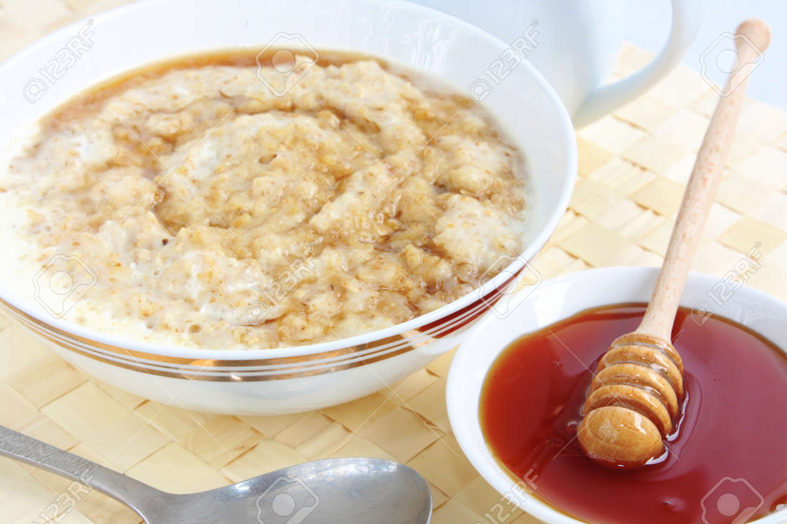

Porridge & Honey!

This is a decription of porridge and honey. There are lots of ingredietns needed to make it taste good. Belwo you will find a list of them.
Ingredients
Instructions
- Add the oats into a microwave safe bowl - give them a little pat
- Add milks so that the oats are just about covered, stir a little
- Microwave on high for 1 min 30 seconds
- Remove from microwave and stir in the honey
- Microwave for another 30 seconds or minute depending on preference of consistency
- Stir one final time, and enjoy!